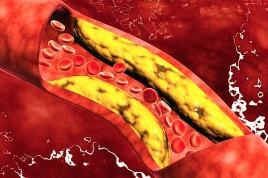
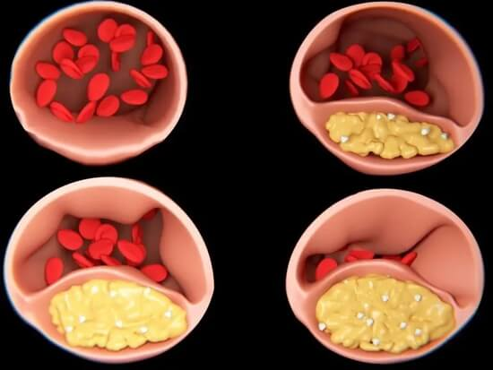
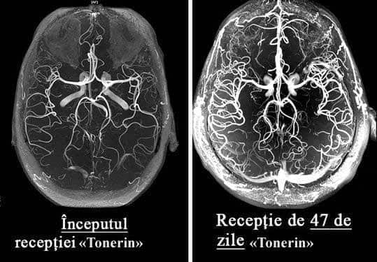
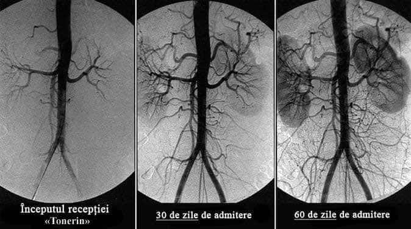
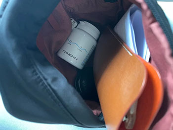
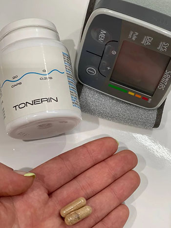
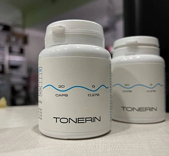

Ce să faci dacă te doare capul, ai zgomot în urechi și îți amorțesc membrele?
Semne de distonie a vaselor cerebrale
Viorel Lucescu
Distonia vaselor cerebrale este o afecțiune în care tonusul vaselor și
circulația normală a sângelui în țesuturile creierului sunt perturbate. În acest articol, puteți citi despre
cauzele, mecanismele și simptomele acesteia la apariția cărora este timpul să bateți alarma. Precum și
despre complicațiile severe ale acestei boli insidioase și despre abordarea modernă a terapiei
disponibilă tuturor.
Distonia
vaselor cerebrale afectează performanța întregului organism. Din cauza alimentării insuficiente cu sânge a
creierului, scade performanța generală, apare slăbiciune, iar sistemele importante ale organismului încep să
funcționeze defectuos.
Simptomele inițiale ale distoniei vaselor cerebrale sunt:
Dureri de cap;
Zgomot în urechi;
Slăbiciune generală, apatie, somnolență;
Capacitate redusă de muncă;
Tulburări de somn, insomnie;
Dereglări de memorie;
Senzație de amorțeală la nivelul membrelor;
Edeme ale mâinilor și picioarelor;
Senzație de întuneric în fața ochilor;
Scăderea vederii;
Dereglări hormonale în organism.
Distonia vaselor cerebrale este primul semn al "înfundării" totale a vaselor organismului cu
colesterol, problema este numită ateroscleroză. Vasele creierului sunt cele mai delicate și subțiri,
astfel
acestea suferă în primul rând.
În baza
terapiei circulației sanguine a vaselor cerebrale se află curățarea vaselor întregului organism de
reziduurile acumulate. Plăci de colesterol, trombi și săruri de calciu.

Cu ce pot fi curățate vasele de sânge acasă?
Restabilirea circulației sanguine și curățarea vaselor de sânge este un proces complex. Aceasta implică
toate vasele corpului și îmbunătățește de multe ori calitatea vieții.
Aflați cum să vă curățați vasele de sânge, cum să scăpați de sute de boli "cronice" și cum să
obțineți încă 20 de ani de viață sănătoasă din acest
interviu detaliat.
Cât de periculoasă este distonia vaselor cerebrale?
Care sunt amenințările ignorării simptomelor?
De ce vasodilatatoarele prezintă pericol?
Care este legătura dintre vasele creierului, excesul de greutate, articulații și potență?
Cum putem restabili circulația sângelui și întări vasele de sânge?
La aceste
întrebări a răspuns șefa Catedrei de Cardiologie și Pneumologie a Academiei de Știință, profesoare
universitar,
specialist în domeniul cardiologiei practicant și expert honoris al țării, Flavia Groșan.
Flavia Groșan este considerată una dintre cei mai buni specialiști în domeniul cardiologiei din
lume. Ea este autoarea
unor tehnici unice și a ajutat peste 1.000 de persoane de coronavirus în 2020.
Flavia
este convinsă că speranța de viață în țara noastră poate fi crescută la 89-93 de ani, ca în țările
dezvoltate.
Dacă începeți să le explicați cetățenilor importanța curățării vaselor de sânge după vârsta de 40 de ani.
Cât de periculoasă este distonia vaselor cerebrale?
- Flavia Groșan, ce simptome ar trebui să ne atragă atenția în primul rând?
- În stadiul
inițial, distonia vaselor cerebrale se manifestă nepronunțat. Majoritatea nu acordă atenție simptomelor, iar
simptomele în sine apar, apoi dispar.
Primele semne ale tulburării circulației cerebrale:
Zgomotul din urechi care apare fără motiv
Musculițe în fața ochilor
Senzație de amorțeală a degetelor și a feței
Dureri de cap în regiunea frunții și tâmplelor
Salturi bruște ale tensiuni (se întunecă în fața ochilor la schimbarea bruscă a poziției corpului)
Îngheață picioarele și mâinile
Odată cu
deteriorarea vaselor de sânge, se dezvoltă unele boli cronice permanente:
Hipertensiune arterială
Dureri articulare, musculare, crampe la nivelul membrelor
Tahicardie
Varice și tromboză venoasă
Slăbirea potenței, mărirea prostatei la bărbați
Încetinirea metabolismului și afectarea metabolismului grăsimilor
În ciuda
faptului că nu este o problemă "acută", deteriorarea circulației sanguine a creierului este foarte
insidioasă.
În cele din urmă, mai devreme sau mai târziu, aceasta duce la accident vascular cerebral, dar până atunci
torturează persoana, ucigând încet funcțiile vitale ale organelor și provocând un întreg buchet de diferite
boli.
Toate aceste
boli sunt consecințe. Consecințe ale aterosclerozei vasculare, depunerii pe pereții vaselor a plăcilor de
colesterol și a trombilor. Spre regret, doar persoane unice de la noi acordă atenție curățării vaselor,
continuând să sufere ani de zile și să bea pastile inutile pentru bolile lor cronice.
- Da,
din păcate, oamenii noștri nu sunt informați despre importanța curățării vaselor.
- Nu e vina
lor. Despre ce putem vorbi când 99 din 100 de specialiști nu au auzit nimic despre nutraceutice și
necesitatea utilizării lor pentru curățarea vaselor de sânge.
În țările
dezvoltate: SUA, Canada, Japonia, Elveția timp de 11 ani a fost legiferat să fie oferite nutraceutice o dată
la 4 ani fiecărui cetățean după 40 de ani. Undeva gratuit, undeva din contul asigurărilor medicale.
Și acest lucru este controlat.
Care sunt amenințările ignorării simptomelor?
– Ce
se întâmplă dacă ignorați simptomele "înfundării" vaselor și luptați numai cu bolile evidente?
Bolile vor
progresa, în pofida oricărei terapii medicamentoase. Da, ele pot fi "atenuate" cu pastile, puteți merge la
chirurgi, dar cauza nu dispare nicăieri.
Și cu cât mai
multe reziduuri se acumulează în vase, cu atât vor fi mai grave consecințele.
La
înfundarea vaselor cerebrale de grad mediu sau mediu-sever, apar următoarele probleme:
Cu un grad
sever de contaminare a vaselor, cel mai adesea pot avea loc accidente vascular cerebral
și
paralizie totală sau parțială.
De ce vasodilatatoarele prezintă pericol?
- Este
adevărat că vasodilatatoarele fac mai mult rău decât bine?
- Da.
Mijloacele vasodilatatoare sunt bune pentru situațiile de urgență. Administrarea lor frecventă creează o
sarcină uriașă asupra pereților vaselor.
Sărmanele vase suferă foarte mult din cauza "straturilor" acumulate de colesterol, care corodează pereții
epiteliului, făcându-l mai subțire. Iar vasodilatatoarele dilată vasele de sânge, creând o suprasolicitare
a pereților. Dacă în acest moment vasul nu rezistă și se rupe, atunci are loc un accident vascular
cerebral.
Din
acest motiv, vă sfătuiesc foarte atent să luați remedii vasodilatatoare și numai în cazuri
excepționale.
Care este legătura dintre vasele creierului, excesul
de greutate, articulații și potență?
- De
ce, în cazul dereglării circulației sanguine a creierului, femeile adesea se îngrașă, bărbații pierd
"puterea" și fac prostatită, iar articulațiile și coloana vertebrală încep să se distrugă?
- Când vasele
creierului sunt "înfundate" din cauza plăcilor, atunci acestea primesc mai puține substanțe nutritive. În
fiecare an, după vârsta de 40 de ani, creierul primește cu 5% mai puține substanțe nutritive.
Prin urmare, până la vârsta de 50 de ani, alimentarea creierului se înrăutățește în jumătate.

Ce
face creierul atunci când nu primește suficiente substanțe nutritive?
1. El crede că suntem înfometați și ne impune să mâncăm.
Dar, indiferent cât de mult mâncați, vasele înfundate nu permit livrarea cantităților suficiente de substanțe
nutritive către creier. Dar acestea trebuie duse undeva. Și corpul le pune la păstrare, apar depuneri de
grăsime.
2. În modul "foame", creierul crede că murim, prin urmare, dezactivează funcțiile "inutile" pentru
supraviețuirea organismului.
Funcția de reproducere nu este necesară pentru un creier înfometat, astfel funcția de potență și
libidoul scad. Scade producția hormonului masculin testosteron. Aceasta, la rândul său, provoacă o creștere în
dimensiuni a prostatei și dezvoltarea prostatitei.
Funcția de recuperare este foarte consumatoare de energie și creierul o "dezactivează" până la vremuri mai
bune. Țesuturile articulațiilor nu mai regenerează: cartilajul, oasele, scade producția de lichid sinovial
(lubrificator articular). Apar dureri articulare, osteocondroză, artrită.
Cum putem restabili circulația sângelui și întări vasele
de sânge?
- Este oare posibil să curățăm singuri vasele de sânge și să restabilim circulația sângelui?
- Da. Acest lucru nu este dificil, dar necesită răbdare și disciplină. Dar merită, și efortul va fi răsplătit.
Institutul de chirurgie vasculară și cardiologie a dezvoltat un remediu unic - nutraceuticul . Specialiștii Institutului au creat un produs care nu
are astăzi analogi. este absolut sigur, nu
are efecte secundare și poate fi luat fără supravegherea unui specialist.
curăță vasele de toate tipurile de depozitări:
Plăci de colesterol
Trombi
Săruri de calciu
Rezultatele utilizării :

Timp de 1,5 luni de administrare a , circulația sângelui se restabilește cu 99,71%
Este important că circulația sângelui se restabilește sistemic: în toate vasele, arterele și capilarele.

Forma a este un "know-how", mândria oamenilor noștri de știință. Acesta asigură aproape
100% de
curățare a vaselor datorită fracțiunilor de CO2 active ale extractelor care pătrund în plăcile de colesterol
și le dizolvă din interior.
Prin curățarea vaselor de sânge, restabilește alimentația normală a creierului. Începe o reacție în
lanț de recuperare a organismului.
Cum acționează asupra organismului?
- acționează în 3 etape:
1. Elimină depunerile din vasele de sânge Dizolvă plăcile
aterosclerotice, cheagurile de sânge și sărurile de calciu. Mărește lumenul vaselor până la 99,71% din normal
și restabilește circulația sângelui.
2. Elimină efectele circulației sanguine defectuoase Sunt
vindecate sau sunt ameliorate în mod semnificativ simptomele a astfel de boli, cum ar fi: hipertensiunea
arterială, dureri de cap, vene varicoase, tromboză, hemoroizi, prostatită. Dispare zgomotul din urechi,
amețelile, edemele, se îmbunătățește acuitatea vizuală și claritatea gândirii. Se normalizează greutatea și
metabolismul lipidic.
3. Sporește rezistența și elasticitatea pereților vaselor de sânge
Acest lucru împiedică formarea plăcilor noi și reduce riscul de accident vascular cerebral de 11
ori.
- Cât de des și cât timp trebuie luat ?
- 1 dată la 5-7 ani, începând cu 40 de ani pentru bărbați și de la 45 de ani
pentru femei. Durata cursului este de la 30 de zile, în caz de simptome severe ale tulburărilor circulatorii -
2 luni.
Deficitul și programul preferențial
- Din câte știm, , a dispărut din majoritatea farmaciilor
private? De ce
și cum
poate fi obținut acum?
- Din păcate, da. De la începutul acestui an, nu mai este livrat în
farmacii private.
Cauza conflictului a fost lăcomia rețelelor de farmacii private care au cerut
producătorului să le plătească câte 195 pentru fiecare
unitate de produs vândută! Adăugând la prețul producătorului un adaos comercial imens (costul unui curs cu
în unele farmacii private din țară a ajuns până la 1700 ),
farmaciștii au vrut să introducă o taxă suplimentară de la producător.
Reprezentanții farmaciilor private se justifică, spunând că un așa adaos
comercial le
permite să supraviețuiască. La urma urmei, este un produs care este cumpărat o dată la
5-7 ani. Și, în plus, după curățarea vaselor cu , persoana nu mai are nevoie
de
remedii care le lua în mod constant! Oamenii renunță la remedii de scădere a tensiunii, încetează să mai
cumpere produse pentru durerea articulară. Reduce semnificativ consumul de remedii pentru astm si diabet.
Și acest lucru duce la pierderi pentru farmacii private. Din acest motiv, acestea insistă la stabilirea unui
preț
extrem de mare pentru .
Ca rezultat producătorul a anulat contractele cu toate farmaciile private și a trecut la distribuție numai prin Internet. În
principiu,
este corect. Vedeți și Dvs., fără plată pentru închirierea spațiilor pentru comercializare, fără mită
farmaciilor private. De aceea este acum mult mai accesibil decât atunci când era vândut
în farmacii
private.
Programul preferențial "Vase curate"
Centrul de Cercetare Pentru Chirurgie Cardiovasculară
Institutul nostru, în colaborare cu Centrul de cercetare pentru
chirurgie cardiovasculară, poșta României și producătorul , în cadrul proiectului de telemedicină
(cumpărături prin internet), a lansat un program preferențial.
Obțineți chiar acum!
Pentru a obține la un preț special de , aveți nevoie doar de
un
telefon mobil.
Introduceți numărul Dvs. în formularul de cerere oficial și faceți clic pe butonul "Obțineți ".
Specialistul nostru vă va contacta pentru a clarifica detaliile de livrare a produsului.
Important! Doar 1 cerere pentru 1 număr de
telefon!
Acum, cererile sunt acceptate și procesate 24 de ore. Dar, din cauza solicitărilor sporite, este
posibil să trebuiască să așteptați puțin.
ADĂUGAT 10.11.2022 ! Din cauza numărului mare de
comenzi, am fost
nevoiți să limităm condițiile de desfășurare a promoției.
În prezent, promoția este valabilă până la
17.11.2022 inclusiv. Până la terminarea ei, produsul original poate fi comandat prin intermediul
formularului de mai jos!
DISCUȚII
Margareta Popescu
/ București
este CEL MAI BUN REMEDIU DIN TOATE. Inițial utilizam un remediu, apoi alte. Știu că sunt
remedii învechite. La specialiști nu-mi place să merg, dar nici nu mă deranja pre tare. Luam ocazional,
atunci
când creștea tensiunea sau mă durea inima. Dar apoi, brusc, au încetat să mă mai ajute. Apoi m-am dus la
specialist și el mi-a recomandat să încerc un nou produs (un specialist tânăr care,
probabil, încă
mai
crede că medicina ar trebui să fie pentru oameni, nu pentru stoarcerea banilor!). m-a ajutat din
prima săptămână, tensiunea imediat a scăzut, dar totuși am urmat cursul așa cum mi-a recomandat
specialistul. După 5
săptămâni am uitat ce este hipertensiunea arterială. Varicele care m-a chinuit 10 ani a dispărut! Mai
aveam
și o problemă ginecologică, acum nici urmă de ea nu a mai rămas. Mă simt minunat, ca în tinerețe!

Cornel Prepeliță / {{location.name}}
Am
cumpărat un curs de 2 luni la preț de 1950 . Încă anul trecut, când se vindea în
farmacii
private. Și vă
spun sincer, nu regret! Deși pare scump, dar am făcut deja economii anul acesta pe alte remedii
aproape
de aceeași valoare. Și cât de ușor îmi este să trăiesc, nu poate fi măsurat în bani! La 52 de ani mă
simțeam
ca un bătrân neajutorat. Nu plecam departe fără tensiometru și pastile hipotensive, credeam că nu voi
ajunge
până la pensionare, capul mă durea în mod constant, de multe ori îmi venea un gând nebun - de-aș scăpa mai
repede de toate... Când colo, timp de 2 luni, am uitat de tensiune, mă simt un BĂRBAT tânăr și sănătos
(sper
că înțelegeți despre ce vorbesc)! Prin urmare, chiar dacă nu veți avea parte de un program preferențial și
nu veți prinde reduceri, comandați neapărat, la orice preț, nu veți regreta! Simt că în curând va
fi
interzis în țară, deoarece foarte multor firme le încurcă ițele și le privează de profit.
Viviana Conțul / Târgu
Mureș
Mulțumesc! Am reușit să comand un pachet prin formularul de pe site pentru doar ! Voi
încerca.
Viorel Oancea / Sibiu
Ce sunt
30 000 de ambalaje? Este o picătură într-un ocean...
Constanța Boccea /
Iași
Mă miră
cei care vor totul pe degeaba!!! Toată lumea vă este datoare! Când mi-am dat seama că am nevoie de
,
nu am așteptat să mi-l dea cineva pe degeaba! M-am împrumutat și l-am cumpărat! Am dat 1750 Și aici, nu
puteți găsi , așteptați gratuit! Rușine! Ar fi trebuit să vă fie rușine să
scrieți așa
ceva.

Cătălin Teodorescu / {{location.name}}
Nu
judeca și nu vei fi judecat! Nu știi ce situație are persoana! Poate că e cu handicap, de unde să ia
bani?
Lorena Cioțu /
Constanța
Mamei
mele au început să-i amorțească degetele, un specialist cunoscut a sfătuit-o să curețe vasele de sânge.
I-a
recomandat "statine", dar am citit că pot provoca cancer la rect și am decis să nu riscăm. În cele din
urmă,
am
aflat din întâmplare despre . Au cumpărat , am dat 1550 pentru un curs. Dar
rezultatul
nu s-a lăsat așteptat, după câteva zile am observat o îmbunătățire semnificativă a tenului, părului,
unghiilor, stării generale a organismului, iar în a doua săptămână, degetele de la mâini aproape au
încetat
să mai amorțească. Timp de 1,5 luni, amorțeala a trecut complet + s-a normalizat tensiunea. Diferența
privind starea generală de sănătate e de la pământ la cer, mama a devenit foarte energică, memoria s-a
îmbunătățit, nu o mai dor articulațiile chiar și pe vreme rea. În concluzie, produsul este super, recomand
tuturor!
Nadia Pantea / Oancea
Am
învins hipertensiunea cu acest remediu. Hipertensiunea a fost mult timp partenerul meu de viață. De-a
lungul timpului, s-au mai asociat diabetul zaharat și problemele renale. Memorie foarte proastă și
scăderea
vederii. Toată viața am luat ce am putut. Nimic nu m-a ajutat cu adevărat. Am decis să încerc
.
Prima dată am comandat remedii pe internet, dar totul a fost simplu.
Lorena Teodorescu /
București
Mulțumim pentru comentariu! Eu sunt o "admiratoare fidelă" de ignorare a spitalelor, cu atât mai mult că,
de
obicei, specialiștii recomandă sau remedii scumpe, sau "de pe altă lume" (îmi amintesc că nu am putut găsi
niște picături pentru ochi "neobișnuite" nici într-o farmacie privată din București). Și nu întotdeauna
vindecătorii
"văd" miezul problemei. Deja de un an, periodic, dimineața îmi amorțesc mâinile. Datorită recenziei dvs.
voi
încerca . Chiar dacă mâinile amorțesc din alt motiv, vasele de sânge oricum trebuie
curățate! Sau
chiar pur și simplu să beți un produs natural. Mulțumesc!

Maria Conțul /
Ploiești
combate foarte bine tensiunea, aproape în fiecare zi spre seara mă durea capul, îmi venea să plâng de
durere, analgezicele nu mă ajutau deloc. Mai târziu am aflat că mă durea capul de la tensiune. Dar nu
contează. O colegă mi-a recomandat , am reușit să cumpăr un ambalaj la preț de ,
eram foarte fericită. În două luni am devenit o persoană diferită! Mi-am dat seama că, înainte de
curățarea
vaselor, de fapt, nici nu am trăit! Capul nu mă mai doare, varicele a trecut și CEL MAI IMPORTANT - AM
PIERDUT 20 KG! De la 94 kg la 74! Iată ce înseamnă normalizarea circulației sangvine! Fără echivoc
recomand
tuturor!
Elena Dida / Iași
Am
auzit despre această metodă de curățare a vaselor, dar nu am încercat-o încă... Cred că acum este timpul
să încerc =)
Andrea Leu / {{location.name}}
Am
riscat și nu regret deloc. Dacă există probleme cu vasele de sânge, îl voi recomanda cu încredere. Nu au
existat efecte secundare, iar de rezultat am rămas foarte mulțumită
Maria Blaj / Craiova
Am
hipercolesterolemie, mi-a fost prescris un produs învechit. Nu am rezistat nici măcar o săptămână să îl
iau,
toți ganglionii limfatici s-au mărit, mai ales cei cervicali, nu puteam întoarce capul. În plus, a
scăzut
vederea. Literalmente, în 4 zile de administrare a apărut un fel de încețoșare a vederii. Specialistul a
spus
că este un efect secundar al statinelor, este descris în reacții adverse. Mi-a prescris un înlocuitor,
dar mi-a fost frică să-l iau. Acum vreau să încerc , compoziția naturală nu ar
trebui să provoace reacții adverse? În special dacă mai pot câștiga și o reducere.
Andrei Vasilescu /
Cluj
este cel mai bun remediu pentru hipercolesterolemie! Nu am avut nicio reacție
adversă la el, de
fapt, nici nu are cum provoca efecte adverse, este absolut natural. Cu excepția alergiei, dar foarte
rar.
Adrian Teodorescu /
Piatra-Neamț
Cea
mai bună soluție pentru hipercolesterolemie este DIETA!
Nicoleta Dumitrescu
/ Oradea
Dieta
va ajuta la protejarea împotriva formării de depozite noi, dar pe cele vechi nu le afectează.
Credeți-mă,
am trecut prin această aventură cu dietele de mai multe ori.
Otilia Friptu /
Botoșani
Semnez sub fiecare cuvânt, este unul dintre cele mai minunate, economice și
eficiente
remedii!
Dacă îl compari cu altele este de vreo 10 ori mai ieftin, iar rezultatul durează de 10 ori mai mult și
nu
are efecte adverse. Comandați cât există un program preferențial, noi îl folosim cu toții.
Antonia Grădescu /
Baia Mare
Am
avut colesterolul peste 6,8, ceea ce este foarte mult pentru mine. Amețeli permanente, salturi de
tensiune
și sănătate precară. Iar după 2 luni, valoarea a ajuns la 3,4. Dar cel mai important este că mă simt
bine!
Acum pot nici sa nu dau analiza. Mi-am dat seama ce este un sânge "slab" și cum e când capul
funcționează
bine :). Oamenii care mă întâlnesc spun că chiar și vorbirea s-a îmbunătățit! Totul s-a schimbat.
Stocul în cadrul promoției: 43 buc.
Depunerea cererilor pentru la preț preferențial ()


Margareta Popescu / București
este CEL MAI BUN REMEDIU DIN TOATE. Inițial utilizam un remediu, apoi alte. Știu că sunt remedii învechite. La specialiști nu-mi place să merg, dar nici nu mă deranja pre tare. Luam ocazional, atunci când creștea tensiunea sau mă durea inima. Dar apoi, brusc, au încetat să mă mai ajute. Apoi m-am dus la specialist și el mi-a recomandat să încerc un nou produs (un specialist tânăr care, probabil, încă mai crede că medicina ar trebui să fie pentru oameni, nu pentru stoarcerea banilor!). m-a ajutat din prima săptămână, tensiunea imediat a scăzut, dar totuși am urmat cursul așa cum mi-a recomandat specialistul. După 5 săptămâni am uitat ce este hipertensiunea arterială. Varicele care m-a chinuit 10 ani a dispărut! Mai aveam și o problemă ginecologică, acum nici urmă de ea nu a mai rămas. Mă simt minunat, ca în tinerețe!
Cornel Prepeliță / {{location.name}}
Am cumpărat un curs de 2 luni la preț de 1950 . Încă anul trecut, când se vindea în farmacii private. Și vă spun sincer, nu regret! Deși pare scump, dar am făcut deja economii anul acesta pe alte remedii aproape de aceeași valoare. Și cât de ușor îmi este să trăiesc, nu poate fi măsurat în bani! La 52 de ani mă simțeam ca un bătrân neajutorat. Nu plecam departe fără tensiometru și pastile hipotensive, credeam că nu voi ajunge până la pensionare, capul mă durea în mod constant, de multe ori îmi venea un gând nebun - de-aș scăpa mai repede de toate... Când colo, timp de 2 luni, am uitat de tensiune, mă simt un BĂRBAT tânăr și sănătos (sper că înțelegeți despre ce vorbesc)! Prin urmare, chiar dacă nu veți avea parte de un program preferențial și nu veți prinde reduceri, comandați neapărat, la orice preț, nu veți regreta! Simt că în curând va fi interzis în țară, deoarece foarte multor firme le încurcă ițele și le privează de profit.
Viviana Conțul / Târgu Mureș
Mulțumesc! Am reușit să comand un pachet prin formularul de pe site pentru doar ! Voi încerca.
Viorel Oancea / Sibiu
Ce sunt 30 000 de ambalaje? Este o picătură într-un ocean...
Constanța Boccea / Iași
Mă miră cei care vor totul pe degeaba!!! Toată lumea vă este datoare! Când mi-am dat seama că am nevoie de , nu am așteptat să mi-l dea cineva pe degeaba! M-am împrumutat și l-am cumpărat! Am dat 1750 Și aici, nu puteți găsi , așteptați gratuit! Rușine! Ar fi trebuit să vă fie rușine să scrieți așa ceva.
Cătălin Teodorescu / {{location.name}}
Nu judeca și nu vei fi judecat! Nu știi ce situație are persoana! Poate că e cu handicap, de unde să ia bani?
Lorena Cioțu / Constanța
Mamei mele au început să-i amorțească degetele, un specialist cunoscut a sfătuit-o să curețe vasele de sânge. I-a recomandat "statine", dar am citit că pot provoca cancer la rect și am decis să nu riscăm. În cele din urmă, am aflat din întâmplare despre . Au cumpărat , am dat 1550 pentru un curs. Dar rezultatul nu s-a lăsat așteptat, după câteva zile am observat o îmbunătățire semnificativă a tenului, părului, unghiilor, stării generale a organismului, iar în a doua săptămână, degetele de la mâini aproape au încetat să mai amorțească. Timp de 1,5 luni, amorțeala a trecut complet + s-a normalizat tensiunea. Diferența privind starea generală de sănătate e de la pământ la cer, mama a devenit foarte energică, memoria s-a îmbunătățit, nu o mai dor articulațiile chiar și pe vreme rea. În concluzie, produsul este super, recomand tuturor!
Nadia Pantea / Oancea
Am învins hipertensiunea cu acest remediu. Hipertensiunea a fost mult timp partenerul meu de viață. De-a lungul timpului, s-au mai asociat diabetul zaharat și problemele renale. Memorie foarte proastă și scăderea vederii. Toată viața am luat ce am putut. Nimic nu m-a ajutat cu adevărat. Am decis să încerc . Prima dată am comandat remedii pe internet, dar totul a fost simplu.
Lorena Teodorescu / București
Mulțumim pentru comentariu! Eu sunt o "admiratoare fidelă" de ignorare a spitalelor, cu atât mai mult că, de obicei, specialiștii recomandă sau remedii scumpe, sau "de pe altă lume" (îmi amintesc că nu am putut găsi niște picături pentru ochi "neobișnuite" nici într-o farmacie privată din București). Și nu întotdeauna vindecătorii "văd" miezul problemei. Deja de un an, periodic, dimineața îmi amorțesc mâinile. Datorită recenziei dvs. voi încerca . Chiar dacă mâinile amorțesc din alt motiv, vasele de sânge oricum trebuie curățate! Sau chiar pur și simplu să beți un produs natural. Mulțumesc!
Maria Conțul / Ploiești
combate foarte bine tensiunea, aproape în fiecare zi spre seara mă durea capul, îmi venea să plâng de durere, analgezicele nu mă ajutau deloc. Mai târziu am aflat că mă durea capul de la tensiune. Dar nu contează. O colegă mi-a recomandat , am reușit să cumpăr un ambalaj la preț de , eram foarte fericită. În două luni am devenit o persoană diferită! Mi-am dat seama că, înainte de curățarea vaselor, de fapt, nici nu am trăit! Capul nu mă mai doare, varicele a trecut și CEL MAI IMPORTANT - AM PIERDUT 20 KG! De la 94 kg la 74! Iată ce înseamnă normalizarea circulației sangvine! Fără echivoc recomand tuturor!
Elena Dida / Iași
Am auzit despre această metodă de curățare a vaselor, dar nu am încercat-o încă... Cred că acum este timpul să încerc =)
Andrea Leu / {{location.name}}
Am riscat și nu regret deloc. Dacă există probleme cu vasele de sânge, îl voi recomanda cu încredere. Nu au existat efecte secundare, iar de rezultat am rămas foarte mulțumită
Maria Blaj / Craiova
Am hipercolesterolemie, mi-a fost prescris un produs învechit. Nu am rezistat nici măcar o săptămână să îl iau, toți ganglionii limfatici s-au mărit, mai ales cei cervicali, nu puteam întoarce capul. În plus, a scăzut vederea. Literalmente, în 4 zile de administrare a apărut un fel de încețoșare a vederii. Specialistul a spus că este un efect secundar al statinelor, este descris în reacții adverse. Mi-a prescris un înlocuitor, dar mi-a fost frică să-l iau. Acum vreau să încerc , compoziția naturală nu ar trebui să provoace reacții adverse? În special dacă mai pot câștiga și o reducere.
Andrei Vasilescu / Cluj
este cel mai bun remediu pentru hipercolesterolemie! Nu am avut nicio reacție adversă la el, de fapt, nici nu are cum provoca efecte adverse, este absolut natural. Cu excepția alergiei, dar foarte rar.
Adrian Teodorescu / Piatra-Neamț
Cea mai bună soluție pentru hipercolesterolemie este DIETA!
Nicoleta Dumitrescu / Oradea
Dieta va ajuta la protejarea împotriva formării de depozite noi, dar pe cele vechi nu le afectează. Credeți-mă, am trecut prin această aventură cu dietele de mai multe ori.
Otilia Friptu / Botoșani
Semnez sub fiecare cuvânt, este unul dintre cele mai minunate, economice și eficiente remedii! Dacă îl compari cu altele este de vreo 10 ori mai ieftin, iar rezultatul durează de 10 ori mai mult și nu are efecte adverse. Comandați cât există un program preferențial, noi îl folosim cu toții.
Antonia Grădescu / Baia Mare
Am avut colesterolul peste 6,8, ceea ce este foarte mult pentru mine. Amețeli permanente, salturi de tensiune și sănătate precară. Iar după 2 luni, valoarea a ajuns la 3,4. Dar cel mai important este că mă simt bine! Acum pot nici sa nu dau analiza. Mi-am dat seama ce este un sânge "slab" și cum e când capul funcționează bine :). Oamenii care mă întâlnesc spun că chiar și vorbirea s-a îmbunătățit! Totul s-a schimbat.